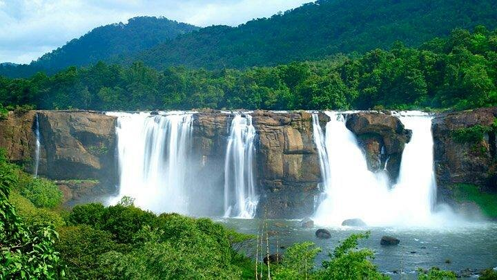

do get permission to drive up beyond vazhachal from the forest people. drive up towards poringalkuthu, on the way, you will cross the chalakudy river - old iron bridge, with the raging river below.

adakkunnathan temple is one of the biggest and the most famous hindu temples in Thrissur. It has a great historical importance and is also where the famous Thrissur Pooram takes place. But the main thing about the temple is the peacefulness that you receive when insided the temple.
It is well maintained beach and good to spend an evening with family and kids. There is park for kids to play. The beach areas are maintained with tiled area and protection wall. Ambient parking space available with some restaurants to have snacks.